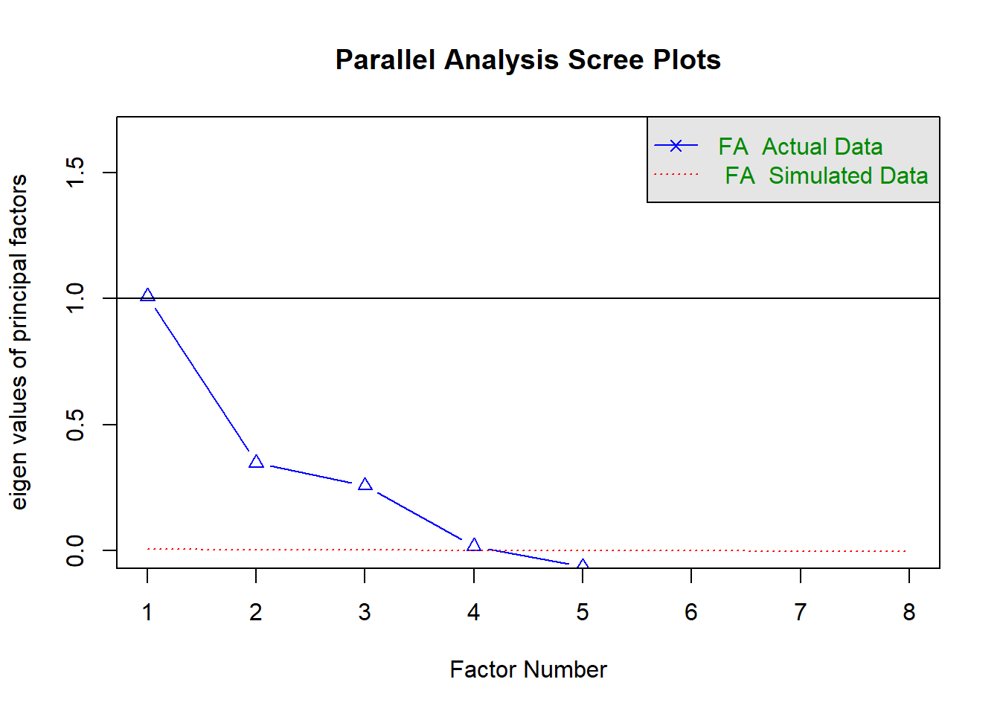

Análisis Multivariado
1. Análisis de Correspondencias de las Variables: Condición de actividad de la persona (P3_7), y Destino de los viajes realizados (P5_11A).
Metodología.
Se inicia con un análisis de correspondencias entre la variable de condición de actividad de la persona (pregunta P3_7) y el destino de sus viajes realizados (P5_11A), con la intención de indagar la relación existente entre estos datos.
Las categorías de la variable Condición de Actividad son:
- 1 Trabajó
- 2 Tenía trabajo, pero no trabajó
- 3 Buscó trabajo
- 4 Es estudiante
- 5 Se dedica a los quehaceres del hogar o a cuidar a sus hijos
- 6 Es jubilado(a) o pensionado(a)
- 7 Está incapacitado(a) permanentemente para trabajar
- 8 No trabajó
Mientras que las de la variable Destino del viaje son:
- 01 Su hogar
- 02 Escuela
- 03 Oficina
- 04 Fábrica o taller
- 05 Comercio, mercado, tienda o centro comercial
- 06 Centro cultural o área recreativa
- 07 Otra vivienda
- 08 Hospital, clínica, consultorio, laboratorio clínico
- 09 Restaurante, bar, cafetería
- 10 Deportivo, gimnasio
- 11 Bases o estaciones de transporte público
- 12 Obra en construcción
- 13 Otros servicios
- 14 Recinto religioso
- 15 Vía pública
- 16 Otro
- 99 No sabe
Se comienza, por lo tanto, leyendo los datos y adjuntando la variable P3_7 de la tabla TSDem a la tabla TViaje:
viajes <- read.csv("bd/tviaje2.csv")
tsdem <- read.csv("bd/tsdem.csv")
library(sqldf)
viajes2 <- sqldf("SELECT viajes.*, tsdem.niv, tsdem.p3_7 FROM viajes LEFT JOIN
tsdem ON viajes.id_soc = tsdem.id_soc")
rm(viajes)Luego, con ello se arma la matriz de datos y se analizan su independencia con la prueba de \(\chi^2\):
# Se genera la tabla de contingencia entre las variables seleccionadas
analisis_1<-table(viajes2$p3_7, viajes2$p5_11a)
rownames(analisis_1) <- c("Trabajo","Tenia trabajo pero no...","Busco trabajo","Estudio","Hogar","Jubilado","Incapacitado","No trabajo")
colnames(analisis_1) <- c("Hogar","Escuela","Oficina","Fabrica/taller","Comercio","Centro Cultural ","Otra vivienda","Hosp. Clinica o Lab","Restaurant","Deportivo,Gym","Bases Transp. Pub,","Obra en Const.","Otros serv.","Recint. Relig.","Via Publica","Otro","No sabe")
# Tabla de contingencia:
analisis_1##
## Hogar Escuela Oficina Fabrica/taller Comercio Centro Cultural
## Trabajo 132148 12877 30884 19345 46981 6007
## Tenia trabajo pero no... 1180 184 119 93 438 50
## Busco trabajo 2651 410 336 181 1030 208
## Estudio 34224 23404 777 313 5390 2758
## Hogar 37194 11229 619 295 18946 1622
## Jubilado 9286 635 483 108 4686 853
## Incapacitado 895 64 39 14 361 68
## No trabajo 11022 2362 422 261 5074 788
##
## Otra vivienda Hosp. Clinica o Lab Restaurant Deportivo,Gym
## Trabajo 15707 5582 2379 1051
## Tenia trabajo pero no... 204 143 24 9
## Busco trabajo 478 119 38 29
## Estudio 3098 578 319 482
## Hogar 4501 2035 254 210
## Jubilado 1485 1257 268 105
## Incapacitado 128 230 17 10
## No trabajo 1635 923 126 104
##
## Bases Transp. Pub, Obra en Const. Otros serv. Recint. Relig. Via Publica
## Trabajo 2674 1153 751 1090 1253
## Tenia trabajo pero no... 17 13 10 15 6
## Busco trabajo 33 13 16 36 9
## Estudio 88 16 139 301 52
## Hogar 106 4 120 686 116
## Jubilado 84 6 45 277 39
## Incapacitado 6 7 4 27 12
## No trabajo 76 29 56 242 59
##
## Otro No sabe
## Trabajo 4079 498
## Tenia trabajo pero no... 34 5
## Busco trabajo 85 12
## Estudio 245 97
## Hogar 457 249
## Jubilado 283 50
## Incapacitado 24 2
## No trabajo 249 73chiR<-chisq.test(analisis_1)
# Inercia total medida de la variabilidad de los datos en la tabla
n<-sum(analisis_1)
inetot<-chiR$statistic/n
print(chiR)##
## Pearson's Chi-squared test
##
## data: analisis_1
## X-squared = 88548, df = 112, p-value < 2.2e-16print(inetot)## X-squared
## 0.1810906Por el p-valor se rechaza \(H_0\), lo que establece que las variables analizadas son dependientes.
Resultados.
Se genera la proyección conjunta de los datos en dos dimensiones:
library("ca")
corres <-ca (analisis_1,nd=2)
plot(corres)## Presenta informacion del modelo de análisis de correspondencia
corres##
## Principal inertias (eigenvalues):
## 1 2 3 4 5 6 7
## Value 0.139003 0.036202 0.00495 0.000638 0.000217 6.2e-05 1.7e-05
## Percentage 76.76% 19.99% 2.73% 0.35% 0.12% 0.03% 0.01%
##
##
## Rows:
## Trabajo Tenia trabajo pero no... Busco trabajo Estudio Hogar Jubilado Incapacitado
## Mass 0.581751 0.005203 0.011624 0.147823 0.160834 0.040800 0.003902
## ChiDist 0.279694 0.295264 0.192575 0.794118 0.386925 0.503333 0.758580
## Inertia 0.045510 0.000454 0.000431 0.093221 0.024079 0.010336 0.002245
## Dim. 1 -0.716012 -0.170514 -0.130360 2.049247 0.679787 -0.186131 -0.205301
## Dim. 2 0.437988 -0.934589 -0.541033 1.120821 -1.428662 -2.367958 -2.718875
## No trabajo
## Mass 0.048062
## ChiDist 0.316522
## Inertia 0.004815
## Dim. 1 0.313769
## Dim. 2 -1.504969
##
##
## Columns:
## Hogar Escuela Oficina Fabrica/taller Comercio Centro Cultural Otra vivienda
## Mass 0.467513 0.104638 0.068877 0.042150 0.169552 0.025265 0.055701
## ChiDist 0.008413 0.938255 0.686142 0.729330 0.291595 0.295874 0.140737
## Inertia 0.000033 0.092116 0.032427 0.022420 0.014417 0.002212 0.001103
## Dim. 1 0.021087 2.458534 -1.603133 -1.690494 -0.300147 0.541088 -0.169866
## Dim. 2 -0.010266 1.048070 1.768948 1.920421 -1.339493 -0.061688 -0.550535
## Hosp. Clinica o Lab Restaurant Deportivo,Gym Bases Transp. Pub, Obra en Const. Otros serv.
## Mass 0.022224 0.007005 0.004090 0.006307 0.002538 0.002333
## ChiDist 0.571977 0.356065 0.297232 0.593811 0.731858 0.192152
## Inertia 0.007271 0.000888 0.000361 0.002224 0.001359 0.000086
## Dim. 1 -0.360460 -0.704730 0.514553 -1.445843 -1.701857 -0.391919
## Dim. 2 -2.419962 0.189032 0.641463 1.286723 1.783612 0.431005
## Recint. Relig. Via Publica Otro No sabe
## Mass 0.005469 0.003162 0.011158 0.002016
## ChiDist 0.511611 0.488817 0.400770 0.310329
## Inertia 0.001431 0.000755 0.001792 0.000194
## Dim. 1 0.315245 -1.223383 -1.034447 0.060501
## Dim. 2 -2.540051 0.738081 0.212281 -1.459255Interpretación.
La dimensión 2 actúa como un discriminante a pesar del poco valor de variabilidad (20%) ya que los valores mas altos (extremos) se presentan en la parte superior de la gráfica. La dimension 1 representa el 76.8% de la variabilidad de los datos.
Analisis de la gráfica de correspondencia.
Cuadrante I
Se observa que las personas que se dedican a los quehaceres del hogar y que no tienen trabajo, tienen como destino más común su hogar, centro cultural o área recreativa, los recintos religiosos y algunos no lo saben.
Cuadrante II
Cuando la persona que viaja busca trabajo, tenia trabajo, pero no trabajó, es jubilada o pensionada, o está incapacitada permanentemente para trabajar, tiene como destino los mercados, comercios,tienda o centro comercial, y hospitales, clínicas, consultorios, etc.
Cuadrante III
Cuando la persona que viaja tiene trabajo, sus destinos mas frecuentes son: Fábrica/taller, Hogar, escuela, oficina, estaciones de transporte público, vía pública, otros lugares, restaurantes, bar, cafetería y otros servicios.
Cuadrante IV
Cuando se es estudiante, los destinos mas frecuentes son: Deportivo/gimnasio y Escuela.
Al ser las variables analizadas dependientes conforme a la prueba de hipotesis \(\chi^2\).
via <- read.csv("bd/tviaje3.csv")
viajes3 <- sqldf("SELECT via.*, tsdem.p3_7 FROM via LEFT JOIN
tsdem ON via.id_soc = tsdem.id_soc")
rm(via)
# Gráfica de dia del viaje y condicion de actividad del pasajero
analisis_2<-table(viajes3$p5_3, viajes3$p3_7)
rownames(analisis_2)=c("viaje entre semana","viaje en sabado")
barplot(analisis_2,names=c("trabajo","tenia_trab","busca","estudia","hogar","jubilado","incap.","no trab"),width = 0.4, xlim = c(0, 3.5),legend=TRUE,xlab="Condicion de actividad",ylab="Frecuencia relativa",col=c("yellow","orange"),main="Viajes de personas por día según condición de actividad")
Conclusión.
En el análisis multivariado es importante tener una visión rápida y de preferencia gráfica del comportamiento de los datos. En nuestro caso, para las dos variables seleccionadas, condición de actividad de la persona (P3_7) y destino de los viajes realizados (P5_11A), una de estas técnicas descriptivas que se adecua muy bien es el análisis de correspondencias, el cual nos permite elaborar un mapa perceptual de las categorías de las variables analizadas en un espacio de pocas dimensiones (2), ya que con dichas dimensiones se tiene un porcentaje alto de variabilidad explicada (96.8%), lo facilita su interpretación gráfica, en donde la mayor o menor distancia entre los puntos reflejan cierto grado de asociación entre las categorías representadas. Seleccionamos esta técnica de análisis porque se aplica a variables categóricas.
2. Análisis de correspondencias de las variables: Estrato sociodemográfico (Estrato), y duración del viaje.
Metodología.
La duración de los viajes es una variable que se captó de forma indirecta, ya que se recopilaron los datos de las horas de inicio y fin de cada viaje. La suposición inicial es que los estratos sociodemográficos más bajos utilizan mayor cantidad de tiempo viajando, debido a las limitaciones en la movilidad a las que se encuentran sometidos.
Las categorías de la variable Estrato son:
- 1 Bajo
- 2 Medio bajo
- 3 Medio alto
- 4 Alto
Comenzamos por lo tanto, por calcular la duración de los viajes en minutos, a partir de las horas de inicio y término.
d1 <- ifelse(viajes2$p5_10_1 < viajes2$p5_9_1,
viajes2$p5_10_1+24, viajes2$p5_10_1)
viajes2$duracion <- (d1-viajes2$p5_9_1)*60 +
viajes2$p5_10_2-viajes2$p5_9_2Después, dado que se requiere categorizar a la variable continua denominada duracion, se procede a generar variables de rangos de minutos, según los siguientes intervalos:
- De 0 a 15 minutos (d0a15m)
- De 16 a 30 minutos (d16a30m)
- De 31 a 60 minutos (d31a60m)
- De 61 a 90 minutos (d61a90m)
- De 91 a 120 minutos (d91a120m)
- Más de 120 minutos (m120m)
viajes2$d0a15m <- ifelse(viajes2$duracion >= 0 & viajes2$duracion <= 15, 1, 0)
viajes2$d16a30m <- ifelse(viajes2$duracion >= 16 & viajes2$duracion <= 30, 1, 0)
viajes2$d31a60m <- ifelse(viajes2$duracion >= 31 & viajes2$duracion <= 60, 1, 0)
viajes2$d61a90m <- ifelse(viajes2$duracion >= 61 & viajes2$duracion <= 90, 1, 0)
viajes2$d91a120m <- ifelse(viajes2$duracion >= 91 & viajes2$duracion <= 120, 1, 0)
viajes2$m120m <- ifelse(viajes2$duracion >= 121, 1, 0)Y con ello se procede a generar la tabla de contingencia de las variables de interés:
tc <- sqldf("SELECT estrato, m120m, d91a120m, d61a90m, d31a60m, d16a30m,
d0a15m, COUNT(*) FROM viajes2 GROUP BY estrato, m120m, d91a120m,
d61a90m, d31a60m, d16a30m, d0a15m")
mat_cont <- matrix(tc[1:24,8], ncol=6, byrow=TRUE)
rownames(mat_cont) <- c("Bajo", "Medio bajo", "Medio alto", "Alto")
colnames(mat_cont) <- c("d0a15m","d16a30m","d31a60m","d61a90m","d91a120m","m120m")
mat_cont## d0a15m d16a30m d31a60m d61a90m d91a120m m120m
## Bajo 1341 1311 880 490 382 368
## Medio bajo 92422 80512 63163 32050 21081 12598
## Medio alto 47149 43047 39984 18226 9115 4749
## Alto 15211 18335 17204 6635 3455 1886Aplicamos la prueba \(\chi^2\), para explorar su comportamiento respecto a la independencia de las categorías:
chisq.test(mat_cont)##
## Pearson's Chi-squared test
##
## data: mat_cont
## X-squared = 3395.3, df = 15, p-value < 2.2e-16Donde puede verse que de acuerdo al p-valor < 0.05, se rechaza la hipótesis de independencia, lo que seguramente tendrá impacto directo en la forma en que se aproximen las categorías en la proyección conjunta de los datos en el análisis de correspondencias.
Resultados.
Se aplica a continuación el análisis de correspondencias nuevamente con la librería ca:
ac_datos <- ca(mat_cont, nd = 2)
ac_datos##
## Principal inertias (eigenvalues):
## 1 2 3
## Value 0.005457 0.00086 7e-05
## Percentage 85.44% 13.46% 1.1%
##
##
## Rows:
## Bajo Medio bajo Medio alto Alto
## Mass 0.008977 0.567775 0.305252 0.117996
## ChiDist 0.239172 0.057521 0.065411 0.150958
## Inertia 0.000514 0.001879 0.001306 0.002689
## Dim. 1 2.260554 0.776101 -0.771900 -1.909552
## Dim. 2 -5.271619 -0.114956 1.073024 -1.821679
##
##
## Columns:
## d0a15m d16a30m d31a60m d61a90m d91a120m m120m
## Mass 0.293688 0.269388 0.228052 0.107979 0.064021 0.036872
## ChiDist 0.068323 0.031349 0.104899 0.026836 0.110230 0.193895
## Inertia 0.001371 0.000265 0.002509 0.000078 0.000778 0.001386
## Dim. 1 0.808069 -0.263787 -1.418698 -0.178480 1.428388 2.308057
## Dim. 2 1.133408 -0.804079 -0.094627 0.714520 -0.952397 -3.006608Que nos arroja los resultados más importantes de la proyección en dos dimensiones (valores propios, varianza explicada, masa, inercia, por renglones y columnas).
Podemos ver, por ejemplo, que la varianza explicada por la primera coordenada es de poco más del 85%, lo cual significa que el problema de proyección en realidad es casi unidimensional, por lo que hay que darle más importancia a lo visto o representado sobre el primer eje que a lo visto sobre el segundo.
Los datos también contienen por supuesto las coordenadas de las dos dimensiones para renglones y columnas, las cuales pueden graficarse.
Tomamos en primer lugar la proyección de los renglones:
plot.ca(ac_datos, what=c("all", "none"),
main="Proyección de los renglones en dos dimensiones")
Y la de las columnas:
plot.ca(ac_datos, what=c("none", "all"),
main="Proyección de las columnas en dos dimensiones")Para mostrar finalmente, la proyección conjunta de renglones y columnas:
plot(ac_datos, ,
main="Proyección conjunta en dos dimensiones")
Interpretación.
La inercia (varianza) explicada por las dos dimensiones es de casi 99%, lo que asegura de entrada que los plots anteriores resumen muy bien la información de las correspondencias.
Por otra parte, de la proyección de los renglones se observa que:
Las categorías se hallan separadas entre sí, es decir, no se aprecia cercanía alguna entre ellas.
Se puede observar que el orden de los puntos a lo largo de la dimensión 1, coincide con el orden de las propias categorías de Alto a Bajo, sin que se haya proporcionado al algoritmo más información que la tabla de contingencia, y sin que el resultado tenga que ver con el orden en que se colocaron las filas en dicha matriz. Lo anterior significa que el hecho de que Alto y Bajo se encuentren en los extremos de la gráfica significa que son las categorías que tienen comportamientos contrarios.
Finalmente, mencionar que el que unos grupos estén en la parte negativa y otros en la positiva, no tiene ningún significado, solo es interesante analizar las diferencias o similitudes existentes entre ellos.
En cuanto a la proyección de las columnas, se observa lo siguiente:
Se observa una buena diferenciación entre las categorías, excepto entre d16a30m y d61a90m, las cuales se encuentran cercanas en la dimensión 1 (recordemos que las distancias en esta dimensión tienen mucho mayor peso que las distancias sobre el eje vertical), lo que implica cierta semejanza en el comportamiento de ambas dentro del conjunto de datos.
A diferencia de la proyección por renglones, en este caso no se aprecia un ordenamiento natural de las categorías, estando en este caso d31a60m y m120m en los extremos de la proyección.
Luego, de la proyección conjunta se observa lo siguiente:
Siempre tomando como base las distancias sobre el eje horizontal, por ser el más relevante, se aprecia mucha cercanía entre las categorías Bajo y m120m. La siguiente categoría de duración más cercana al estrato Bajo es d91a120m. Por otra parte, cabe resaltar que el estrato más cercano a la categoría d91a120m es el Medio Bajo. Lo anterior refuerza la suposición inicial, de que los estratos sociodemográficos menos favorecidos emplean mayor tiempo en trasladarse. El estrato Medio bajo es muy cercano a d0a15m, lo que podría explicarse recordando que se captaron viajes a pie, en los cuales puede estar la mayor frecuencia de dicha duración.
En el centro de la gráfica se aprecia cierta cercanía entre el estrato Medio alto con d16a30m y d61a90, e incluso con d31a60m, lo que no deja muy claro el comportamiento de este estrato.
Por otro lado, en el extremo izquierdo de la proyección sí es posible apreciar que el estrato Alto tiene únicamente una categoría de duración que es la más aproximada, d31a60m. Esto es consistente con la hipótesis inicial, pues mientras los estratos bajos usan mucho tiempo en sus traslados, el estrato Alto tiende a demorarse cuando mucho una hora.
Debemos tener presente, no obstante, que todas estas interpretaciones representan sólo un primer acercamiento a las relaciones entre estas variables con la herrmienta de análisis de correspondencias, y no consideran efectos subyacentes debido a otras causas.
3. Análisis de Factores de variables seleccionadas de la encuesta.
Metodología.
Realización de análisis factorial para detectar variables latentes que resumen la variabilidad entre el conjunto de variables involucradas en la encuesta origen-destino de la zona metropolitana del valle de México
El conjunto de variables en este análisis es: - SEXO. Sexo de la persona - EDAD. Edad de la persona - ESTRATO_SOCIO. Estrato sociodemográfico de la persona - OCUPACION. Ocupación de la persona - ESTUDIOS. Grado de estudios de la persona - NUM_VIAJES. Cantidad de viajes realizados entre semana - MEDIO_TRANSPORTE. Medio de transporte que utilizó - TIEMPO_MINUTOS. Tiempo en minutos del viaje realizado (tiempo de espera y trasbordo)
Librerías, lectura y acondicionamiento de datos.
#Librerías
library(ggplot2)
library(ggcorrplot)
library(psych)
library(MASS) # Prueba estadística
library(stats) # Análisis de factores
library(psych)
library(GPArotation)
base<-read.csv(file="bd/DatosAF.csv")
base<-base[,1:8]
head(base) # Primeras filas de los datos## ï..SEXO EDAD ESTRATO P3_7 GRA P5_4 P5_14 TIEMPO
## 1 1 29 2 1 6 2 14 10
## 2 1 29 2 1 6 2 14 10
## 3 1 29 2 1 6 2 14 10
## 4 1 29 2 1 6 2 14 10
## 5 2 28 2 1 3 4 14 20
## 6 2 28 2 1 3 4 14 20colnames(base)<-c("SEXO","EDAD","ESTRATO_SOCIO","OCUPACION","ESTUDIOS","NUM_VIAJES","MEDIO_TRANSPORTE","TIEMPO_MINUTOS")
head(base) # Primeras filas de los datos con las columnas renombradas## SEXO EDAD ESTRATO_SOCIO OCUPACION ESTUDIOS NUM_VIAJES MEDIO_TRANSPORTE TIEMPO_MINUTOS
## 1 1 29 2 1 6 2 14 10
## 2 1 29 2 1 6 2 14 10
## 3 1 29 2 1 6 2 14 10
## 4 1 29 2 1 6 2 14 10
## 5 2 28 2 1 3 4 14 20
## 6 2 28 2 1 3 4 14 20# Se categorizan los 99's en NA
base[base==99]<-NA
summary(base)## SEXO EDAD ESTRATO_SOCIO OCUPACION ESTUDIOS NUM_VIAJES
## Min. :1.000 Min. : 6.0 Min. :1.000 Min. :1.00 Min. :0.000 Min. : 1.00
## 1st Qu.:1.000 1st Qu.:23.0 1st Qu.:2.000 1st Qu.:1.00 1st Qu.:3.000 1st Qu.: 2.00
## Median :1.000 Median :35.0 Median :2.000 Median :1.00 Median :3.000 Median : 2.00
## Mean :1.498 Mean :36.6 Mean :2.504 Mean :2.48 Mean :3.242 Mean : 2.33
## 3rd Qu.:2.000 3rd Qu.:49.0 3rd Qu.:3.000 3rd Qu.:4.00 3rd Qu.:4.000 3rd Qu.: 2.00
## Max. :2.000 Max. :97.0 Max. :4.000 Max. :8.00 Max. :9.000 Max. :14.00
## NA's :50698 NA's :32947
## MEDIO_TRANSPORTE TIEMPO_MINUTOS
## Min. : 1.00 Min. : 1.00
## 1st Qu.: 2.00 1st Qu.: 10.00
## Median : 7.00 Median : 15.00
## Mean : 8.07 Mean : 24.88
## 3rd Qu.:14.00 3rd Qu.: 30.00
## Max. :20.00 Max. :1200.00
## NA's :9917baseLW<-na.omit(base) # Se omiten los NA's
head(baseLW)## SEXO EDAD ESTRATO_SOCIO OCUPACION ESTUDIOS NUM_VIAJES MEDIO_TRANSPORTE TIEMPO_MINUTOS
## 1 1 29 2 1 6 2 14 10
## 2 1 29 2 1 6 2 14 10
## 3 1 29 2 1 6 2 14 10
## 4 1 29 2 1 6 2 14 10
## 5 2 28 2 1 3 4 14 20
## 6 2 28 2 1 3 4 14 20mat_base<-as.matrix(baseLW)
idx<-complete.cases(baseLW) # Se obtiene el vector lógico de casos completos
#idx
datos_compl<-mat_base[idx,] # Datos completosSe obtiene la matriz de correlaciones:
n=dim(datos_compl)[1]
p=dim(datos_compl)[2]
dim(datos_compl)## [1] 798517 8mat_cor <- round(cor(datos_compl),3) # Se obtiene la matriz de correlación
mat_cor## SEXO EDAD ESTRATO_SOCIO OCUPACION ESTUDIOS NUM_VIAJES MEDIO_TRANSPORTE
## SEXO 1.000 0.014 0.016 0.252 0.010 0.154 0.085
## EDAD 0.014 1.000 0.086 0.000 0.232 0.034 -0.024
## ESTRATO_SOCIO 0.016 0.086 1.000 0.002 0.026 0.037 -0.087
## OCUPACION 0.252 0.000 0.002 1.000 -0.074 0.139 0.115
## ESTUDIOS 0.010 0.232 0.026 -0.074 1.000 -0.001 -0.013
## NUM_VIAJES 0.154 0.034 0.037 0.139 -0.001 1.000 0.055
## MEDIO_TRANSPORTE 0.085 -0.024 -0.087 0.115 -0.013 0.055 1.000
## TIEMPO_MINUTOS -0.087 0.028 0.031 -0.093 0.024 -0.088 -0.479
## TIEMPO_MINUTOS
## SEXO -0.087
## EDAD 0.028
## ESTRATO_SOCIO 0.031
## OCUPACION -0.093
## ESTUDIOS 0.024
## NUM_VIAJES -0.088
## MEDIO_TRANSPORTE -0.479
## TIEMPO_MINUTOS 1.000# Se grafica la matriz de correlación
ggcorrplot(mat_cor,type="lower",lab = TRUE, tl.cex = 10,
ggtheme = ggplot2::theme_gray,
colors = c("blue", "white", "deeppink"))# Se calcula el determinante:
det(mat_cor)## [1] 0.6264238COMENTARIOS: Los resultados obtenidos tanto de la matriz de correlación como del determinante, indican que existe bajo nivel de colinealidad.
Se aplica la prueba de Bartlett que se utiliza para probar la hipótesis nula que afirma que las variables no están correlacionadas en la población o el supuesto de homogeneidad de varianzas:
p_fac<-cortest.bartlett(mat_cor,n=nrow(baseLW))
p_fac## $chisq
## [1] 373486.7
##
## $p.value
## [1] 0
##
## $df
## [1] 28p_fac$p## [1] 0De acuerdo a los resultados obtenidos se podría interpretar la presencia de multicolinealidad en el conjunto de variables, ya que el p-valor es menor a 0.05.
Se aplica otra prueba de Kaiser-Meyer-Olkin en donde los resultados son valorados como:
- 0.00 a 0.49 inaceptable.
- 0.50 a 0.59 escasamente regular.
- 0,60 a 0,69 regular.
- 0.70 a 0.79 medio.
- 0,80 a 0,89 meritorio.
- 0.90 a 1.00 maravilloso.
KMO(mat_cor)## Kaiser-Meyer-Olkin factor adequacy
## Call: KMO(r = mat_cor)
## Overall MSA = 0.55
## MSA for each item =
## SEXO EDAD ESTRATO_SOCIO OCUPACION ESTUDIOS
## 0.59 0.51 0.55 0.60 0.50
## NUM_VIAJES MEDIO_TRANSPORTE TIEMPO_MINUTOS
## 0.65 0.53 0.53De acuerdo a los resultados de la prueba KMO, se observa que existe un bajo nivel de multicolinealidad entre las variables.
Resultados.
Se aplica el análisis de factores.
# minres --> modelo mínimo residuo
# Se determina el número de factores
scree(mat_cor)fa.parallel(mat_cor,n.obs=nrow(datos_compl),fa="fa",fm="minres")
## Parallel analysis suggests that the number of factors = 4 and the number of components = NACOMENTARIOS: De acuerdo a los resultados gráficos se observa que a partir de 2 factores se pueden utilizar, sin embargo con 4 factores se podría considerar para un patrón ideal.
De acuerdo a estos resultados se considerarán 4 factores.
#Se ejecutan las Rotaciones
datos.fa.none <- factanal(datos_compl, factors = 4, rotation = "none")
datos.fa.varimax <- factanal(datos_compl, factors = 4, rotation = "varimax")
datos.fa.promax <- factanal(datos_compl, factors = 4, rotation = "promax")
par(mfrow = c(1,3))
plot(datos.fa.none$loadings,pch=21,
bg="orange",
ylim = c(-1,1),
xlim = c(-1,1),
main = "No rotación")
abline(h = 0, v = 0)
plot(datos.fa.varimax$loadings,pch=21,
bg="magenta",
ylim = c(-1,1),
xlim = c(-1,1),
main = "Rotación Varimax")
text(datos.fa.varimax$loadings-0.08,
colnames(baseLW),
col="blue")
abline(h = 0, v = 0)
plot(datos.fa.promax$loadings,pch=21,
bg="cyan",
ylim = c(-1,1),
xlim = c(-1,1),
main = "Rotación Promax")
abline(h = 0, v = 0)par(mfrow = c(1,1))
modeloAF<-fa(datos_compl,rotate = "varimax",nfactors = 4,fm="minres")
plot(modeloAF)fa.diagram(modeloAF)modeloAF$uniquenesses## SEXO EDAD ESTRATO_SOCIO OCUPACION ESTUDIOS
## 0.741177481 0.916473638 0.782468240 0.746111214 0.004914492
## NUM_VIAJES MEDIO_TRANSPORTE TIEMPO_MINUTOS
## 0.907461997 0.732643871 0.004810233modeloAF$communalities## SEXO EDAD ESTRATO_SOCIO OCUPACION ESTUDIOS
## 0.25882590 0.08352524 0.21753080 0.25388607 0.99500000
## NUM_VIAJES MEDIO_TRANSPORTE TIEMPO_MINUTOS
## 0.09253561 0.26735476 0.99500000#####
modeloAF_re<-factanal(datos_compl,factors=4,rotation = "varimax",scores="regression")
modeloAF_re##
## Call:
## factanal(x = datos_compl, factors = 4, scores = "regression", rotation = "varimax")
##
## Uniquenesses:
## SEXO EDAD ESTRATO_SOCIO OCUPACION ESTUDIOS
## 0.747 0.918 0.775 0.740 0.005
## NUM_VIAJES MEDIO_TRANSPORTE TIEMPO_MINUTOS
## 0.908 0.733 0.005
##
## Loadings:
## Factor1 Factor2 Factor3 Factor4
## SEXO 0.499
## EDAD 0.245 0.143
## ESTRATO_SOCIO 0.466
## OCUPACION 0.504
## ESTUDIOS 0.994
## NUM_VIAJES 0.287
## MEDIO_TRANSPORTE -0.477 0.144 -0.136
## TIEMPO_MINUTOS 0.993
##
## Factor1 Factor2 Factor3 Factor4
## SS loadings 1.227 1.056 0.617 0.269
## Proportion Var 0.153 0.132 0.077 0.034
## Cumulative Var 0.153 0.285 0.363 0.396
##
## Test of the hypothesis that 4 factors are sufficient.
## The chi square statistic is 921.45 on 2 degrees of freedom.
## The p-value is 8.11e-201COMENTARIOS: Derivado de estos resultados, se observa que el factor 1 explica el 15% de la varianza, el factor 2 explica el 13%, el factor 3 explica el 7% y el factor 4 explica el 3%.
diagram(modeloAF_re)
#Se obtienen los scores
scoresAF<-modeloAF_re$scores
summary(scoresAF)## Factor1 Factor2 Factor3 Factor4
## Min. :-1.2079 Min. :-2.4770 Min. :-1.14256 Min. :-7.1424
## 1st Qu.:-0.6547 1st Qu.:-0.2521 1st Qu.:-0.64700 1st Qu.:-0.3956
## Median :-0.3010 Median :-0.1880 Median :-0.03189 Median :-0.1279
## Mean : 0.0000 Mean : 0.0000 Mean : 0.00000 Mean : 0.0000
## 3rd Qu.: 0.2752 3rd Qu.: 0.5173 3rd Qu.: 0.51193 3rd Qu.: 0.3462
## Max. :49.5011 Max. : 4.3248 Max. : 3.00162 Max. : 2.0227#Se obtienen los loadings
loadingsAF<-modeloAF$loadings
summary(loadingsAF)## MR1 MR2 MR3 MR4
## Min. :-0.47727 Min. :-0.04957 Min. :-0.07618 Min. :-0.13725
## 1st Qu.:-0.06030 1st Qu.: 0.01111 1st Qu.: 0.01199 1st Qu.:-0.05000
## Median :-0.02717 Median : 0.02992 Median : 0.08938 Median :-0.01525
## Mean : 0.05283 Mean : 0.16342 Mean : 0.17173 Mean : 0.05109
## 3rd Qu.: 0.03393 3rd Qu.: 0.10233 3rd Qu.: 0.34005 3rd Qu.: 0.09328
## Max. : 0.99323 Max. : 0.99441 Max. : 0.50547 Max. : 0.45839plot(loadingsAF,pch=21,
bg="purple",
cex=1,) # Dibujar el área de visualización
text(loadingsAF,labels=names(baseLW),cex=.7) # Añadir las variables
abline(h = 0, v = 0,col = "cornflowerblue",lwd = 2)
4. Análisis de Correspondencias entre las variables: Estrato sociodemográfico vs Tipo de Transporte (P5_14).
Metodología.
El propósito del análisis de correspondencia entre estrato socioecónomico y el tipo de transporte de la Encuesta Origen destino 2017, es observar entre los diferentes estratos que transporte se usa más comúnmente en la movilidad urbana.
Se considera importante esta correspondencia ya que en la CDMX y áreas conurbadas en la encuesta se clasifican 20 tipos de transporte: “Automovil”, “Colectivo”, “Taxi_I”, “Taxi_S,”, “Metro”, “Autobus_RTP”, “Bicicleta”, “Autobus”, “Moto”, “Trolebus”, “Metrobus”, “Tren_L”, “Tren_S”, “Caminar”, “Mexicable”, “Bicitaxi”, “Mototaxi”, “T.Escolar”, “T.Personal”, “otro”.
En lo referente a la variable de estrato se clasifican 4 estratos sociodemográficos: “Bajo”, “Medio Bajo”, “Medio Alto” y “Alto”.
Primero, invocamos librerías y leemos los datos.
library("MASS")
library("stats")
library("scatterplot3d")
library("smacof")
datosC <- read.csv("bd/ttransporte2.csv", header = TRUE)
head(datosC)## p5_14 estrato
## 1 14 3
## 2 2 3
## 3 5 3
## 4 14 3
## 5 14 3
## 6 2 3Se calcula la tabla de contingencia entre la variable de estrato y tipo de transporte.
tabla_T<-table(datosC$estrato,datosC$p5_14)
tabla_T##
## 1 2 3 4 5 6 7 8 9 10 11 12 13
## 1 434 2526 6 129 516 16 140 103 61 1 91 5 0
## 2 42518 143108 731 13449 36099 3577 8917 9440 3894 682 7060 913 1036
## 3 38106 59091 1167 9596 25006 2147 2334 3754 1364 1050 7191 533 1031
## 4 31278 15758 864 2980 5845 468 563 1181 433 269 1843 146 487
##
## 14 15 16 17 18 19 20
## 1 4156 0 12 35 8 4 30
## 2 237893 129 1016 3537 1224 317 503
## 3 120897 0 391 751 664 137 181
## 4 27884 0 129 88 719 77 29Se calcula la \(\chi^2\) para probar la independencia de los renglones y columnas de la tabla de contingencia y la inercia total (medida de la variabilidad total de los datos en la tabla).
n<-sum(tabla_T)
n## [1] 890748chiR<-chisq.test(tabla_T,simulate.p.value=T) # Se tuvo que usar esta alternativa debido al
# warning : Chi-squared approximation may be incorrect
chiR##
## Pearson's Chi-squared test with simulated p-value (based on 2000 replicates)
##
## data: tabla_T
## X-squared = 62446, df = NA, p-value = 0.0004998inetot<-chiR$statistic/n
inetot## X-squared
## 0.07010537Tenemos que el valor p es muy pequeño, por lo tanto se rechaza la hipótesis de independencia.
Se calcula la matriz F de frecuencias relativas o matriz de correspondencia.
nrow<-nrow(tabla_T)
ncol<-ncol(tabla_T)
F_Esp_V<-(tabla_T)/n
F_Esp_V##
## 1 2 3 4 5 6 7
## 1 4.872310e-04 2.835819e-03 6.735912e-06 1.448221e-04 5.792884e-04 1.796243e-05 1.571713e-04
## 2 4.773292e-02 1.606605e-01 8.206586e-04 1.509855e-02 4.052661e-02 4.015726e-03 1.001069e-02
## 3 4.277978e-02 6.633863e-02 1.310135e-03 1.077297e-02 2.807304e-02 2.410334e-03 2.620270e-03
## 4 3.511431e-02 1.769075e-02 9.699713e-04 3.345503e-03 6.561901e-03 5.254011e-04 6.320531e-04
##
## 8 9 10 11 12 13 14
## 1 1.156332e-04 6.848177e-05 1.122652e-06 1.021613e-04 5.613260e-06 0.000000e+00 4.665742e-03
## 2 1.059783e-02 4.371607e-03 7.656486e-04 7.925923e-03 1.024981e-03 1.163067e-03 2.670710e-01
## 3 4.214436e-03 1.531297e-03 1.178785e-03 8.072990e-03 5.983735e-04 1.157454e-03 1.357253e-01
## 4 1.325852e-03 4.861083e-04 3.019934e-04 2.069048e-03 1.639072e-04 5.467315e-04 3.130403e-02
##
## 15 16 17 18 19 20
## 1 0.000000e+00 1.347182e-05 3.929282e-05 8.981216e-06 4.490608e-06 3.367956e-05
## 2 1.448221e-04 1.140614e-03 3.970820e-03 1.374126e-03 3.558807e-04 5.646939e-04
## 3 0.000000e+00 4.389569e-04 8.431116e-04 7.454409e-04 1.538033e-04 2.032000e-04
## 4 0.000000e+00 1.448221e-04 9.879337e-05 8.071868e-04 8.644420e-05 3.255691e-05Se calculan las frecuencias relativas de las filas y de las columnas de F o tambien llamadas masas (las ri y las cj).
rtot<-apply(F_Esp_V,1,sum)
ctot<-apply(F_Esp_V,2,sum)Los vectores obtenidos se colocan en las matrices diagonales correspondientes (Dr y Dc).
Dr<-diag(rtot)
str(Dr)## num [1:4, 1:4] 0.00929 0 0 0 0 ...Dc<-diag(ctot)
str(Dc)## num [1:20, 1:20] 0.126 0 0 0 0 ...Se calcula la matriz de perfiles por fila (R).
table.pro<-F_Esp_V/rtot #matriz R de renglones
table.pro##
## 1 2 3 4 5 6 7
## 1 0.0524598090 0.3053305935 0.0007252508 0.0155928925 0.0623715702 0.0019340022 0.0169225190
## 2 0.0823923588 0.2773179754 0.0014165486 0.0260617817 0.0699534729 0.0069315929 0.0172795678
## 3 0.1383705350 0.2145712823 0.0042376113 0.0348450022 0.0908018054 0.0077961880 0.0084752225
## 4 0.3435594952 0.1730868510 0.0094902297 0.0327325051 0.0642018431 0.0051405411 0.0061840270
##
## 8 9 10 11 12 13 14
## 1 0.0124501390 0.0073733833 0.0001208751 0.0109996374 0.0006043757 0.0000000000 0.5023570652
## 2 0.0182930492 0.0075458828 0.0013215953 0.0136810305 0.0017692324 0.0020075846 0.4609945295
## 3 0.0136315275 0.0049529578 0.0038127608 0.0261119644 0.0019354300 0.0037437680 0.4390012746
## 4 0.0129721774 0.0047560989 0.0029547127 0.0202436265 0.0016036731 0.0053492383 0.3062795883
##
## 15 16 17 18 19 20
## 1 0.0000000000 0.0014505016 0.0042306298 0.0009670011 0.0004835005 0.0036262541
## 2 0.0002499792 0.0019688282 0.0068540800 0.0023718954 0.0006142899 0.0009747250
## 3 0.0000000000 0.0014197995 0.0027270317 0.0024111173 0.0004974745 0.0006572473
## 4 0.0000000000 0.0014169440 0.0009665975 0.0078975407 0.0008457728 0.0003185378Se calcula la matriz de perfiles por columna (Rc).
table.pcol<- t(t(F_Esp_V)/ctot) #matriz R de columnas
table.pcol##
## 1 2 3 4 5 6 7
## 1 0.0038634098 0.0114566656 0.0021676301 0.0049323239 0.0076482969 0.0025773196 0.0117115610
## 2 0.3784895314 0.6490659144 0.2640895954 0.5142234457 0.5350695165 0.5761920103 0.7459427807
## 3 0.3392144994 0.2680070572 0.4216040462 0.3669037241 0.3706459550 0.3458440722 0.1952484524
## 4 0.2784325595 0.0714703628 0.3121387283 0.1139405062 0.0866362316 0.0753865979 0.0470972060
##
## 8 9 10 11 12 13 14
## 1 0.0071142423 0.0106050070 0.0004995005 0.0056224900 0.0031308704 0.0000000000 0.0106337794
## 2 0.6520237602 0.6769819193 0.3406593407 0.4362063639 0.5716969317 0.4056382146 0.6086866413
## 3 0.2592899572 0.2371349096 0.5244755245 0.4443002780 0.3337507827 0.4036805012 0.3093339815
## 4 0.0815720403 0.0752781641 0.1343656344 0.1138708681 0.0914214152 0.1906812843 0.0713455978
##
## 15 16 17 18 19 20
## 1 0.0000000000 0.0077519380 0.0079347087 0.0030592734 0.0074766355 0.0403768506
## 2 1.0000000000 0.6563307494 0.8018589889 0.4680688337 0.5925233645 0.6769851952
## 3 0.0000000000 0.2525839793 0.1702561777 0.2539196941 0.2560747664 0.2436069987
## 4 0.0000000000 0.0833333333 0.0199501247 0.2749521989 0.1439252336 0.0390309556Se calcula la \(\chi^2\) para verificar la independencia de los renglones y columnas de la tabla de contingencia y la inercia total (medida de la variabilidad total de los datos en la tabla)
t.rowsum<-n*rtot #suma de las entradas por fila de la tabla de contingencia
t.colsum<-n*ctot #suma de las entradas por columna de la tabla de contingencia
tabla_exp<-t.rowsum%o%t.colsum/n # matriz de frecuencias esperadas
tabla_exp## 1 2 3 4 5 6 7 8 9
## 1 1043.343 2047.78 25.70835 242.9105 626.604 57.65804 111.0252 134.4673 53.42285
## 2 65080.367 127733.89 1603.60396 15151.9719 39085.529 3596.52219 6925.3908 8387.6366 3332.34465
## 3 34730.724 68166.34 855.77771 8085.9864 20858.345 1919.31649 3695.7973 4476.1379 1778.33577
## 4 11481.566 22534.98 282.90997 2673.1312 6895.522 634.50328 1221.7868 1479.7581 587.89672
## 10 11 12 13 14 15 16 17 18
## 1 18.59397 150.3214 14.83246 23.72079 3629.912 1.198113 14.37736 40.96804 24.28733
## 2 1159.83206 9376.5644 925.20070 1479.62591 226422.159 74.734433 896.81320 2555.45415 1514.96545
## 3 618.95484 5003.8881 493.74169 789.61571 120832.227 39.882704 478.59245 1363.74115 808.47497
## 4 204.61913 1654.2261 163.22515 261.03759 39945.702 13.184749 158.21699 450.83666 267.27224
## 19 20
## 1 4.968919 6.900761
## 2 309.945130 430.447162
## 3 165.405014 229.712009
## 4 54.680937 75.940067chi2<- sum((tabla_T-tabla_exp)^2/tabla_exp)
chi2## [1] 62446.22inetot1<-chi2/n
inetot1## [1] 0.07010537Se calcula la matriz \(Z\).
Z<-(sqrt(solve(Dr)))%*%F_Esp_V%*%(sqrt(solve(Dc)))
Z## [,1] [,2] [,3] [,4] [,5] [,6] [,7] [,8]
## [1,] 0.01423635 0.05914449 0.001253824 0.008769789 0.02184116 0.002232609 0.01407797 0.009411339
## [2,] 0.17659175 0.42426129 0.019341555 0.115765190 0.19346827 0.063197535 0.11353224 0.109213107
## [3,] 0.21665016 0.23980538 0.042268121 0.113069718 0.18345387 0.051925576 0.04067891 0.059451814
## [4,] 0.30928652 0.11122311 0.054426723 0.061070109 0.07458020 0.019685728 0.01706606 0.032529479
## [,9] [,10] [,11] [,12] [,13] [,14] [,15] [,16]
## [1,] 0.008842781 0.0002457177 0.007864182 0.001375581 0.00000000 0.07308867 0.00000000 0.003353237
## [2,] 0.071473255 0.0212182417 0.077251230 0.031803533 0.02853687 0.52971805 0.01581073 0.035947218
## [3,] 0.034271259 0.0447180020 0.107710506 0.025415571 0.03887526 0.36850782 0.00000000 0.018937228
## [4,] 0.018921691 0.0199251562 0.048012075 0.012108264 0.03193743 0.14782321 0.00000000 0.010866401
## [,17] [,18] [,19] [,20]
## [1,] 0.005793860 0.001719977 0.001901304 0.012100278
## [2,] 0.074135050 0.033319818 0.019078289 0.025688020
## [3,] 0.021547482 0.024743285 0.011286747 0.012653460
## [4,] 0.004391326 0.046598779 0.011033043 0.003526023Se obtienen los vectores propios y valores propios mediante la descomposicion en valores singulares de \(Z\).
dvalsing<-svd(Z)
dvalsing## $d
## [1] 1.00000000 0.25209233 0.07953279 0.01514474
##
## $u
## [,1] [,2] [,3] [,4]
## [1,] -0.09637271 -0.1028915 0.08540593 -0.98632219
## [2,] -0.76114170 -0.4670377 0.42081978 0.15953003
## [3,] -0.55602900 0.1607302 -0.81480615 -0.03299229
## [4,] -0.31969886 0.8633973 0.38949644 -0.02510407
##
## $v
## [,1] [,2] [,3] [,4]
## [1,] -0.35512566 0.864443516 0.24477053 -0.05164041
## [2,] -0.49751952 -0.276318507 0.39625097 -0.08960112
## [3,] -0.05574496 0.177012164 -0.06280324 -0.06021698
## [4,] -0.17135297 0.063200831 -0.23736171 0.30074133
## [5,] -0.27521053 0.005056392 -0.46710271 0.09222657
## [6,] -0.08348307 -0.017464766 -0.09878073 0.37455231
## [7,] -0.11584551 -0.131694669 0.28265943 0.16216015
## [8,] -0.12749022 -0.056857805 0.13819749 0.35405583
## [9,] -0.08035854 -0.049367574 0.12923078 0.07095535
## [10,] -0.04740832 0.057343511 -0.24801953 0.07705896
## [11,] -0.13479660 0.086783423 -0.45116182 -0.01265394
## [12,] -0.04234236 -0.001807636 -0.03132795 0.16998432
## [13,] -0.05354674 0.081300883 -0.09087331 0.16297039
## [14,] -0.66239420 -0.269972507 -0.17009068 -0.22792900
## [15,] -0.01203421 -0.029291675 0.08365692 0.16654536
## [16,] -0.04168771 -0.018675376 0.05300884 0.10100637
## [17,] -0.07037058 -0.110932416 0.19923494 0.34936308
## [18,] -0.05418242 0.112941449 0.15286289 0.10781983
## [19,] -0.02450753 0.008862282 0.04138826 0.03426349
## [20,] -0.02888132 -0.032385506 0.03654743 -0.55086753Se obtienen las representaciones de las filas y columnas en un espacio de tres dimensiones considerando los vectores propios obtenidos de la dvs.
Se consideran solo los vectores propios asociados a valores propios distintos de 1, en este caso se consideran las columnas 2,3 y 4 de las matrices \(U\) y \(V\) de la dvs.
ind<-c(2,3,4)Representacion de las filas en tres dimensiones.
Cr<-(sqrt(solve(Dr)))%*%Z%*%dvalsing$v[,ind]
Cr## [,1] [,2] [,3]
## [1,] -0.26914425 0.07048232 -0.1549981648
## [2,] -0.15468422 0.04397206 0.0031742328
## [3,] 0.07287182 -0.11654753 -0.0008986216
## [4,] 0.68081520 0.09689662 -0.0011892276Representación de las columnas en tres dimensiones.
Cc<-(sqrt(solve(Dc)))%*%t(Z)%*%dvalsing$u[,ind]
Cc## [,1] [,2] [,3]
## [1,] 0.613640754 0.05481801 -0.002202265
## [2,] -0.140010134 0.06334414 -0.002727503
## [3,] 0.800492231 -0.08960302 -0.016359696
## [4,] 0.092980265 -0.11017048 0.026580510
## [5,] 0.004631646 -0.13498750 0.005075196
## [6,] -0.052738037 -0.09410658 0.067947877
## [7,] -0.286581809 0.19405752 0.021199556
## [8,] -0.112427577 0.08621236 0.042058786
## [9,] -0.154870750 0.12790283 0.013372573
## [10,] 0.304922378 -0.41608060 0.024616731
## [11,] 0.162299610 -0.26619483 -0.001421703
## [12,] -0.010762067 -0.05884414 0.060798891
## [13,] 0.382755877 -0.13497382 0.046093271
## [14,] -0.102745461 -0.02042256 -0.005211286
## [15,] -0.613601480 0.55287968 0.209593077
## [16,] -0.112933016 0.10113151 0.036694632
## [17,] -0.397399207 0.22517522 0.075187863
## [18,] 0.525478028 0.22438296 0.030137142
## [19,] 0.091160300 0.13431482 0.021173562
## [20,] -0.282678864 0.10064357 -0.288863079Se calcula la proporción de la inercia explicada por las dos dimensiones (asociadas a valores propios mas grandes distintos de uno).
vp<-(dvalsing$d)^2
vp_dist1<-vp[-1]
vp_dist1## [1] 0.0635505404 0.0063254643 0.0002293632var_expl <- sum(vp_dist1[1:2])/sum(vp_dist1)
var_expl## [1] 0.9967283Se observa una varianza explicada alta cercana a 1.
Resultados.
Se obtiene la representacion conjunta de los renglones y columnas en el espacio de dos dimensiones:
par(pty="s")
plot(Cr,xlim=range(Cr[,1],Cc[,1]),ylim=range(Cr[,1],Cc[,1]),
xlab="Coordenada 1",ylab="Coordenada 2",lwd=2)
points(Cc,col=4)
text(Cr,labels=c("Bajo","Medio Bajo","Medio Alto","Alto"),col=1,lwd=2,cex = 1.2)
text(Cc,labels=c("Automovil","Colectivo","Taxi_I","Taxi_S,","Metro","Autobus_RTP","Bicicleta","Autobus","Moto","Trolebus","Metrobus","Tren_L","Tren_S","Caminar","Mexicable","Bicitaxi","Mototaxi","T.Escolar","T.Personal","otro"),col="blue",lwd=4,cex = 1.2)
abline(h=0,lty=2)
abline(v=0,lty=2)Se calculan las distancias \(\chi^2\) de cada renglón de R a su centroide: (Ra-c)’Dc^-1(Ra-c).
dist.chicua.ren<-sqrt(apply((t(table.pro)-ctot)^2/ctot,2,sum))
dist.chicua.ren## 1 2 3 4
## 0.3184820 0.1608441 0.1374570 0.6876770Se calcula la inercia de cada renglón, que se obtiene multiplicando las distancia chi cuadrada a su centroide (al cuadrado) por su masa correspondiente:
inercia.ren<-((dist.chicua.ren)^2) *rtot
inercia.ren## 1 2 3 4
## 0.0009420589 0.0149879194 0.0058415597 0.0483338298Se calculan las distancias \(\chi^2\) de cada columna de R a su centroide: (Ra-r)’Dr^-1(Ra-r).
dist.chicua.col<-sqrt(apply(((table.pcol)-rtot)^2/rtot,2,sum))
dist.chicua.col## 1 2 3 4 5 6 7 8 9
## 0.61608834 0.15369696 0.80565759 0.14659259 0.13516225 0.12749221 0.34675190 0.14778861 0.20130303
## 10 11 12 13 14 15 16 17 18
## 0.51643655 0.31177375 0.08529338 0.40846613 0.10488502 0.85212204 0.15597418 0.46290736 0.57217403
## 19 20
## 0.16370398 0.41650732Se calcula la inercia de cada columna, que se obtiene multiplicando las distancia \(\chi^2\) a su centroide (al cuadrado) por su masa correspondiente:
inercia.col<-((dist.chicua.col)^2) *ctot
inercia.col## 1 2 3 4 5 6 7
## 4.786853e-02 5.847239e-03 2.017029e-03 6.309679e-04 1.383697e-03 1.132828e-04 1.613601e-03
## 8 9 10 11 12 13 14
## 3.550059e-04 2.616764e-04 5.994365e-04 1.766188e-03 1.304310e-05 4.783857e-04 4.826808e-03
## 15 16 17 18 19 20
## 1.051571e-04 4.227869e-05 1.061134e-03 9.611100e-04 1.609598e-05 1.447036e-04sum(inercia.ren)## [1] 0.07010537sum(inercia.col)## [1] 0.07010537
Ahora vamos usar la función “ca” de R para realizar análisis de correspondencia sobre la misma tabla de contingencia.
Nota: Esta función trabaja directamente con la matriz tabla_T, la cual ya no tiene un valor propio de 1.
corres<-ca(tabla_T, nd = 2)
Cr1<-corres$rowcoord #coordenadas de las filas
Cc1<-corres$colcoord #coordenadas de las columnas
plot(corres,main="Encuesta Origen Destino 2017",cex.main=2,sub="Análisis de Correspondencia Estrato vs Tipo de Transporte",cex.sub=1.5)Se obtiene la representacion conjunta de los renglones y columnas en el espacio de dos dimensiones.
par(pty="s")
plot(Cr1,xlim=range(Cr1[,1],Cc1[,1]),ylim=range(Cr1[,1],Cc1[,1]),
xlab="Coordenada 1",ylab="Coordenada 2",lwd=2,main="Encuesta Origen Destino 2017",cex.main=2,sub="Análisís de Correspondencia Estrato vs Tipo de Transporte",cex.sub=1.5)
points(Cc1,col=2)
text(Cr1,labels=c("Bajo","Medio Bajo","Medio Alto","Alto"),col="red",lwd=2,cex=1.5)
text(Cc1,labels=c("Automovil","Colectivo","Taxi_I","Taxi_S,","Metro","Autobus_RTP","Bicicleta","Autobus","Moto","Trolebus","Metrobus","Tren_L","Tren_S","Caminar","Mexicable","Bicitaxi","Mototaxi","T.Escolar","T.Personal","otro"),col="blue",lwd=4,cex = 1.5)
abline(h=0,lty=2)
abline(v=0,lty=2)Las proyecciones por filas, columnas y conjuntas de filas y columnas; comprueban que en la proyección por filas,las categorías están claramente separadas. En la variable del estrato, las primeras categorías de bajo y medio bajo están muy cercanas. Sin embargo, el estrato medio alto y alto estan separados. El tipo de transporte está también muy claramente identificado en la correspondencia a cada estrato socioecónomico.
En el caso del estrato alto se observa claramente la correspondencia con el automóvil.
En el estrato bajo hay una correspondecia cercana al colectivo, bicitaxi, autobús y moto. Para el estrato medio bajo, hay correspondencia cercana a los del estrato bajo.
En el estrato medio alto hay una correspondecia cercana al metro, taxi de sitio y autobús RTP y tren ligero.
5. Análisis de Correlación Canónica de variables seleccionadas.
Metodología.
El análisis de correlación canónica es utilizado cuando un conjunto de variables se puede dividir en dos grupos homogéneos en función de algún criterio ya sea económico, demográfico, social, etc., y se desea estudiar la relación entre ambos conjuntos de variables, así como cuantificar el número de dimensiones independientes existentes en esta relación.
En específico se analizan dos conjuntos de variables sociodemográficas de las personas que viajan, las cuales corresponden a sexo y parentesco existente con el jefe del hogar; dichos conjuntos de variables son de las entidades: Ciudad de México, Hidalgo y México, que conforman la zona Metropolitana del Valle de México.
Cargamos las librerías utilizadas:
#librerías utilizadas:
library(readxl)
library(dplyr)
library(devtools)
#install_github("ggobi/ggally")
library(GGally)
library(fields)
library(ggplot2)
library(CCA)
#update.packages(checkBuilt = TRUE, ask = FALSE)
#install.packages("vegan",dependence=TRUE)
#install.packages("ade4",dependence=TRUE)
library(vegan)
library(permute)
#install.packages("devtools")
#devtools::install_github("calligross/ggthemeassist")Se leen y preparan los datos:
# Se leen los datos:
datosCCP<-read_excel("bd/Tablas.xlsx",sheet="parentesco")
# Se establece el grupo de datos de parentesco:
Dparentesco<-datosCCP
Dparentesco<-as.data.frame(datosCCP)
Dparentesco## Entidad Esposo_companiero Hijo Jefe Nieto Otro_parentesco Sin_parentesco
## 1 Ciudad de Mexico 14586 29807 24895 5823 7231 830
## 2 Hidalgo 202 449 283 52 52 3
## 3 Mexico 21857 46102 31507 7598 8349 491# Se establece el grupo de datos de sexo:
datosCCS<-read_excel("bd/Tablas.xlsx",sheet="sexo")
Dsexo<-datosCCS
Dsexo<-as.data.frame(datosCCS)
Dsexo## Entidad Hombre Mujer
## 1 Ciudad de Mexico 39769 43403
## 2 Hidalgo 492 549
## 3 Mexico 56560 59344Resultados
# Se grafican los grupos de variables:
ggpairs(Dsexo, title = "Sexo de la persona que viaja")ggpairs(Dparentesco, title = "Parentesco con respecto al jefe del hogar")Como se puede observar se grafican en forma de matriz cada conjunto de datos con sus variables, este resultado es una correlación de las variables elegidas. Este tipo de gráfica nos provee de dos comparaciones diferentes por cada par de columnas que han sido seleccionadas.
#Se unifican ambos conjuntos en uno solo para graficar:
sitios <-cbind(Dparentesco,Dsexo[,2:3])
sitios## Entidad Esposo_companiero Hijo Jefe Nieto Otro_parentesco Sin_parentesco Hombre Mujer
## 1 Ciudad de Mexico 14586 29807 24895 5823 7231 830 39769 43403
## 2 Hidalgo 202 449 283 52 52 3 492 549
## 3 Mexico 21857 46102 31507 7598 8349 491 56560 59344ggduo(sitios,columnsX = 1:7,columnsY = 8:9,
types = list(continuous = "smooth_lm"),
title = "Correlaci?n entre variables de sexo y parentesco",
xlab = "Parentesco",
ylab = "Sexo"
)La gráfica permite obtener y visualizar la correlación entre los dos conjuntos de variables referentes a sexo y parentesco.
Se generan las matrices para los cálculos posteriores:
Y<-as.matrix(Dsexo[,2:3],dimnames = NULL)
Y## Hombre Mujer
## [1,] 39769 43403
## [2,] 492 549
## [3,] 56560 59344X<-as.matrix(Dparentesco[,2:7],dimnames = NULL)
X## Esposo_companiero Hijo Jefe Nieto Otro_parentesco Sin_parentesco
## [1,] 14586 29807 24895 5823 7231 830
## [2,] 202 449 283 52 52 3
## [3,] 21857 46102 31507 7598 8349 491# Se procede a calcular las matrices de correlación dentro
# y entre los dos conjuntos de datos.
mat_CC <-matcor(X,Y)
mat_CC## $Xcor
## Esposo_companiero Hijo Jefe Nieto Otro_parentesco Sin_parentesco
## Esposo_companiero 1.0000000 0.9997193 0.9910512 0.9940332 0.9776741 0.7274944
## Hijo 0.9997193 1.0000000 0.9876106 0.9911699 0.9724215 0.7110351
## Jefe 0.9910512 0.9876106 1.0000000 0.9996978 0.9969733 0.8125682
## Nieto 0.9940332 0.9911699 0.9996978 1.0000000 0.9947608 0.7979936
## Otro_parentesco 0.9776741 0.9724215 0.9969733 0.9947608 1.0000000 0.8554233
## Sin_parentesco 0.7274944 0.7110351 0.8125682 0.7979936 0.8554233 1.0000000
##
## $Ycor
## Hombre Mujer
## Hombre 1.0000000 0.9995246
## Mujer 0.9995246 1.0000000
##
## $XYcor
## Esposo_companiero Hijo Jefe Nieto Otro_parentesco Sin_parentesco
## Esposo_companiero 1.0000000 0.9997193 0.9910512 0.9940332 0.9776741 0.7274944
## Hijo 0.9997193 1.0000000 0.9876106 0.9911699 0.9724215 0.7110351
## Jefe 0.9910512 0.9876106 1.0000000 0.9996978 0.9969733 0.8125682
## Nieto 0.9940332 0.9911699 0.9996978 1.0000000 0.9947608 0.7979936
## Otro_parentesco 0.9776741 0.9724215 0.9969733 0.9947608 1.0000000 0.8554233
## Sin_parentesco 0.7274944 0.7110351 0.8125682 0.7979936 0.8554233 1.0000000
## Hombre 0.9991953 0.9979646 0.9956075 0.9976083 0.9853154 0.7544283
## Mujer 0.9974838 0.9955242 0.9980207 0.9992651 0.9901111 0.7743061
## Hombre Mujer
## Esposo_companiero 0.9991953 0.9974838
## Hijo 0.9979646 0.9955242
## Jefe 0.9956075 0.9980207
## Nieto 0.9976083 0.9992651
## Otro_parentesco 0.9853154 0.9901111
## Sin_parentesco 0.7544283 0.7743061
## Hombre 1.0000000 0.9995246
## Mujer 0.9995246 1.0000000Datoscca<- cca(X,Y)
Datoscca## Call: cca(X = X, Y = Y)
##
## Inertia Proportion Rank
## Total 0.003953 1.000000
## Constrained 0.003953 1.000000 2
## Unconstrained 0.000000 0.000000 0
## Inertia is scaled Chi-square
##
## Eigenvalues for constrained axes:
## CCA1 CCA2
## 0.003919 0.000033Podemos observar que “Total Inertia” o varianza total en las distribuciones de los grupos de datos es relativamente pequeña así como los resultados de los eigenvalores que representan la cantidad de varianza explicada por cada eje CCA o restringida y la suma de ambos eigenvalores es el valor de “Constrained Inertia”.
plot(Datoscca,ylim=c(-2,2))En el gráfico se observa como en el eje existe una elevación creciente tanto para la variable mujer como para hombre.